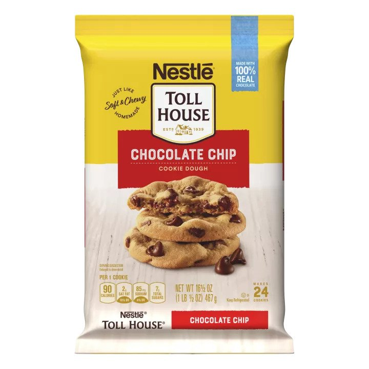

The Cookie

Our refrigerated cookie dough makes it easy. Just break, bake and
enjoy your favorite chocolate chip cookies.
Full of our original morsels, these cookies are just like homemade and
deliver the rich, creamy semi-sweet chocolate you’ve come to love from
NESTLÉ® TOLL HOUSE®.
Ingredients
- NESTLÉ® TOLL HOUSE® Chocolate Chip Cookie Dough Bar
Steps
- Break along pre-scored lines
- Place 12 cookies 2" apart on ungreased baking sheet(s).
- Preheat oven to 350°F
- Bake 11-12 minutes or until golden brown. Directions developed
using conventional ovens. Ovens vary. Baking time may need to be
adjusted.
- After baking, cool cookies 2 minutes on baking sheet, remove to
cool completely.